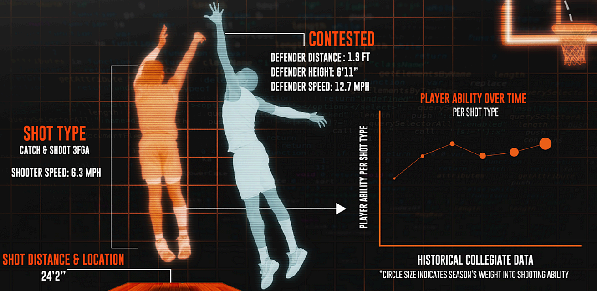

Product design · Work in progress
KorisLab
An interactive basketball analysis product for Finland's men's and women's Korisliiga, with season data from 2024–25 onward.
KorisLab connects team, player and match data across both leagues, helping people explore patterns across a game, a team or a season.
- Role
- Product framing, UX/UI and data-led interface direction
- Context
- Finnish basketball · Men’s and women’s top leagues
- Status
- Work in progress
Explore Finnish basketball beyond a single box score.
KorisLab connects team, player and match data across the men's and women's leagues, helping people look for patterns across a game, a team or a season.
Product framing and data-led interface direction.
I am shaping how basketball data, player context and comparisons become a clearer analysis experience.
Two leagues, with season data from 2024–25 onward.
Both the men's and women's Korisliiga are now included. Coverage and match data verification are still ongoing.

The question
How might basketball data support clearer analysis without turning the product into a wall of disconnected statistics?
My contribution
I am shaping the product framing, interaction direction and relationship between data, context and the questions a user wants to answer.
What is still open
The product still needs evidence about which users, comparisons and moments make the data genuinely useful.
From numbers to understanding
KorisLab is being shaped around three connected questions: what happened, why it happened and what to try next. The challenge is not only to show more data, but to make the relationship between data and interpretation easier to follow.
Work in progress · Product direction and data exploration continue